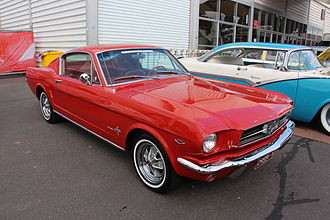
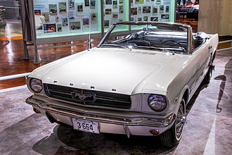
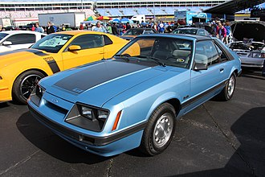
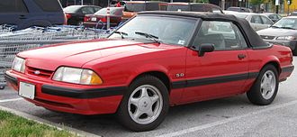
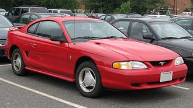
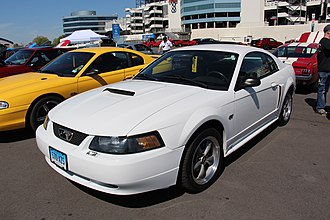
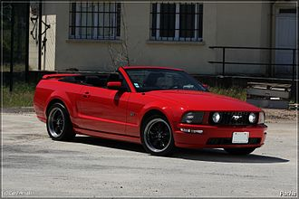
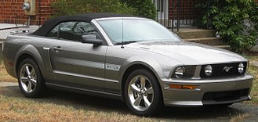
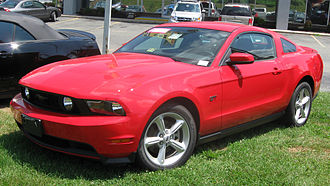
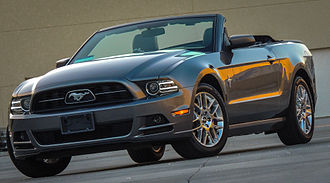

The Ford Mustang is a series of American automobiles manufactured by Ford. It is the longest-produced Ford car nameplate and is the fifth-best selling Ford car nameplate. Robert J. Eggert, Ford Division market research manager, suggested the Mustang name for Ford's new concept car, which was tested by focus groups and came out on top. However, the name was owned by Krupp and Kreidler, so Mustangs were sold in Germany as "T-5s" until December 1978.
Donald N. Frey was the head engineer for the T-5 project, which was a two-seat mid-mounted engine roadster with a German Ford Taunus V4 engine. The 1963 Mustang II four-seater concept car was designed with a lower roof and Gale Halderman's side view design was the basis for the first clay model.
 Iacocca ordered a smaller, more fuel-efficient Mustang for 1974, based on the Ford Pinto subcompact. It was introduced two months before the 1973 oil crisis and sold 385,993 cars. It was an early example of downsizing among Detroit's Big Three during the "malaise era". It was finished to a high standard and was heavier due to new U.S. emission and safety regulations. The 1974 Mustang was available in coupe and hatchback versions, including a luxury Ghia model.
Changes introduced for 1975 included an "MPG" model, a "Stallion" trim package, a "Cobra II" version, and a "King Cobra" in 1978. The 1977–1978 hatchback models were now available with the T-top roof option.
The 1979 Mustang was based on the Fox platform and had a larger body with an increased wheelbase. Available trim levels included a base model (1979–1981), Ghia (1979–1981), Cobra (1979–1981, 1993), L (1982–1984), GL (1982–1983), GT (1982–1993), Turbo GT (1983–1984), LX (1984–1993), GT-350 20th anniversary edition (1984), SVO (1984–1986) and Cobra R (1993). Engines and drivetrains carried over from the Mustang II, including the 2.3 L I4, 2.8 L V6, and 4.9 L V8 engines. The Mustang was restyled from 1979 to 1986 to reflect the "aero" style of the Ford Taurus. It was selected as the 1979 Official Indianapolis 500 Pace Car and featured special body-appearance parts.
In 1983, the Mustang convertible was restyled with new grilles and "blue oval" Ford emblems. 1985 Mustangs received another front-fascia restyle.
 In November 1993, the Mustang debuted its first major redesign in fifteen years. It was based on an updated version of the rear-wheel drive Fox platform called "Fox-4". The base model had a 3.8 OHV V6 engine rated at 145 bhp or 150 bhp, and was mated to a 5-speed manual or optional 4-speed automatic transmission. In 1999, the Mustang was reskinned with Ford's New Edge styling theme, and the powertrains were carried over for 1999. In 2004, a 3.9 L variant of the Essex engine replaced the standard 3.8 L mid year with an increase of 3 ftlb (4 Nm) of torque and NVH improvements. There were also three alternate models offered in this generation.
 Ford introduced a re-designed 2005 Mustang based on the new D2C platform, with a 210 hp cast-iron block 4.0 L SOHC V6, and an aluminum block 4.6 L SOHC three-valve Modular V8 with variable camshaft timing. The Shelby GT500 had a new 3.72 L aluminum block V6 engine, a 32-valve 5.0 L engine, Brembo brakes, 19-inch wheels, performance tires, a new Mustang Boss 302 version, and a new 5.8 L supercharged V8.
   The 2015 Ford Mustang received a five-star rating from the NHTSA and was affected by a recall of airbags made by Takata Corporation. Ford re-introduced the 2018 Mustang, Shelby GT350, and Mach 1 for the 2019 and 2020 model years, respectively, with a 2.3 L I4 Ecoboost engine and a 5.0 L V8 engine.
2018 Mustang engine line up revised, special edition 2018 Bullitt model released.
For the 2019 model year, Ford revised many components on the 2019 Shelby GT350 including stickier Michelin Pilot Sport Cup 2 tires along with steering and suspension components.
The 2020 model year saw the re-introduction of the GT500. The 2020 GT500 includes a hand-built 5.2-liter "Predator" aluminum-alloy V8 engine with a 2.65-liter roots-type supercharger. The Shelby GT500 produces 760 hp (567 kW; 771 PS) and 625 lb⋅ft (847 N⋅m) of torque. The GT350 was discontinued at the end of the 2020 model year.
Ford re-introduced the Mach 1 for the 2021 model year, featuring a Coyote 5.0 L engine with GT350 parts, a lightweight Tremec transmission, and parts from the GT500.